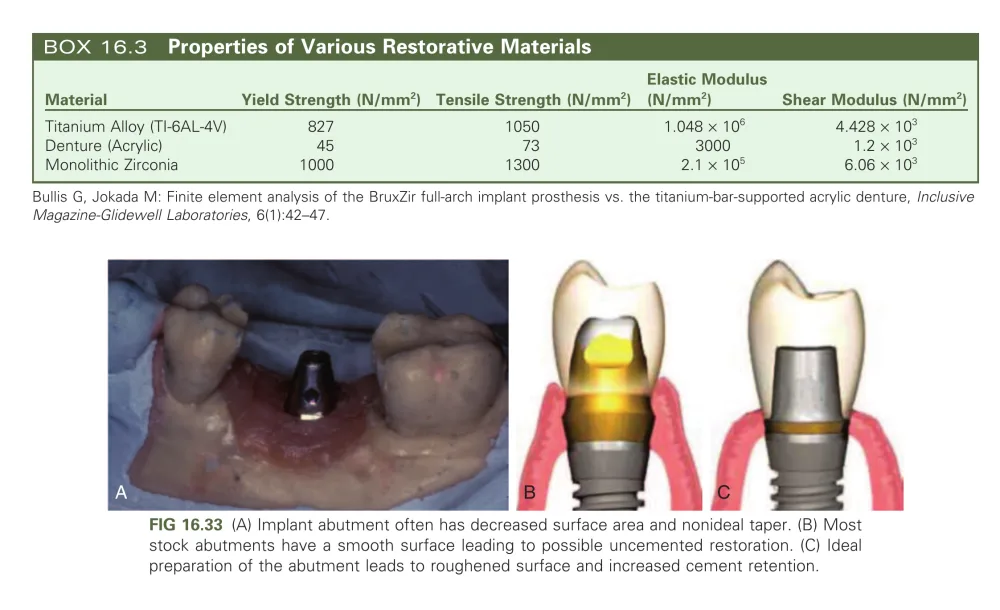
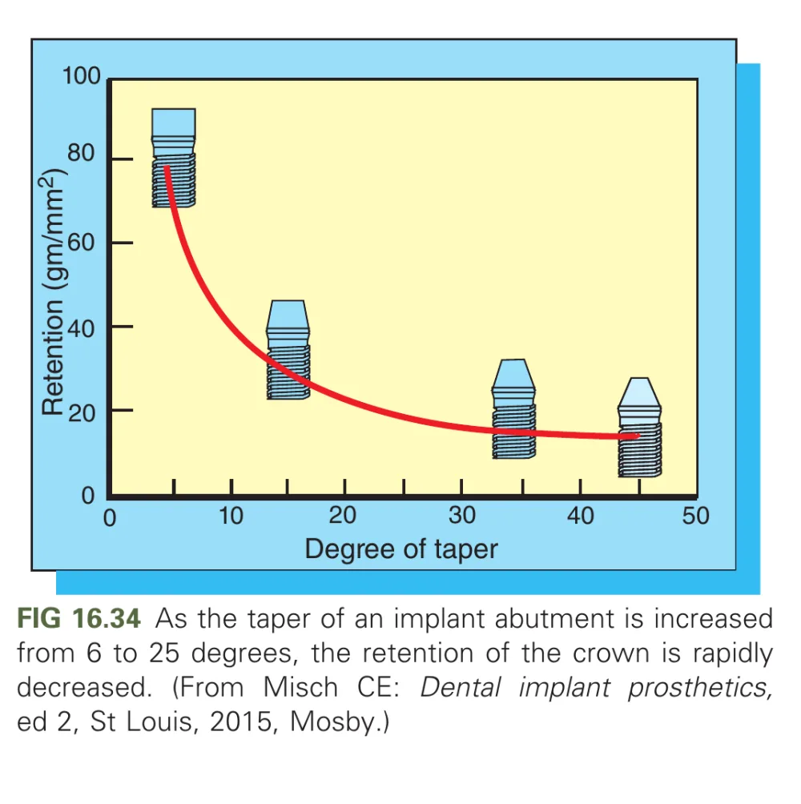

نسخه استخراجشده؛ ترجمه یا تأیید علمی انجام نشده است. وضعیت: captured
بیا با یک رتبهبندی دوگانه شروع کنیم: پروتز جداشده سومین علت شایع شکست پروتزهای ثابت روی دندان طبیعی است. اما در ایمپلنت وضع فرق میکند:
«این عارضه در اباتمنتهای ایمپلنت حتی شایعتر است، چون آنها رِیجیدترند و نیروهای بالاتری به رابط سمان منتقل میشود.» و پروتز جداشده دومین عارضهی شایع پروتزی ایمپلنت گزارش شده و حدود یکپنجم تا یکچهارم عوارض مستند را تشکیل میدهد.
تنها شل شدن پیچ از آن شایعتر است (حدود یکسوم عوارض). پس این دو عارضه بخش بزرگی از عوارض پروتزی ایمپلنت را میسازند.
و کِی رخ میدهد؟ «یک پروتز ایمپلنت بیشتر وقتی مستعد از دست دادن سمان است که بارهای مزمن یا نیروهای برشی بر پروتز اعمال شود، که سرانجام رابط سمان را ضعیف میکند.»
و اکنون پنج ویژگی ذاتی که اباتمنت ایمپلنت را از دندان طبیعی جدا میکنند:
به مورد پنجم دقت کن، چون مشکلی است که خود پزشک میسازد: پزشک عمداً سمان ضعیفتری میگذارد تا بتواند بعداً تاج را بردارد — و همان تصمیم، احتمال جدا شدن ناخواسته را بالا میبرد. قابلیت بازیابی و گیر، در تعارض مستقیماند.
و اصول گیر و مقاومت پروتز ثابت عیناً قابلتعمیماند: «اصول گیر و مقاومت پروتز ثابت مستقیماً بر اباتمنتهای ایمپلنت قابل اعمالاند و شامل تیپر، سطح، ارتفاع، هندسهی تراش اباتمنت، زبری سطح، و عوامل چسباننده میشوند».
این فهرست ششتایی، نقشهی راه دو درس بعدی است. هر یک از این شش، یک اهرم مستقل برای افزایش گیر است — و در یک اباتمنت ایمپلنت که ذاتاً کمگیر است، اغلب باید چند تای آنها را همزمان به کار برد.

تیپر جایگاه ویژهای دارد:
«موازی بودن دیوارههای اگزیال بهعنوان تکمؤثرترین عامل برای گیر شناخته شده است.»
و تعریف دقیق تیپر، که اغلب اشتباه فهمیده میشود: «درجهی تیپر بهعنوان مجموع هر دو سوی تراش تعریف میشود.» — یعنی وقتی میگوییم «تیپر ۶ درجه»، هر دیواره ۳ درجه است.
و عدد ایدهآل: «یک فرز الماسی تیپر معمول در حالت ایدهآل طوری ساخته میشود که حدود ۳ درجه در هر سو، یا مجموعاً ۶ درجه تیپر نشان دهد.» و «تیپر ایدهآل در اصل در محدودهی ۲ تا ۵ درجه از موازی بودن مسیر جاگذاری توصیه شده بود، که همچنین حداقل تمرکز تنش را بر اباتمنتهای تراشخورده میگذارد.»
و اکنون واقعیت بازار، که فاصلهاش با ایدهآل حیرتانگیز است:
«متأسفانه، بیشتر اباتمنتهای استاندارد ساخت کارخانه برای سمان، تیپر کلی از ۱۰ تا بیش از ۳۰ درجه نشان میدهند. در نتیجه، سطوح گیرندهی اباتمنتهای ایمپلنت تیپرتر و تراشنخورده، گیر کمتری از اباتمنتهای طبیعی فراهم میکنند.»
مقایسهاش را ببین: ایدهآل ۲ تا ۶ درجه، واقعیت ۱۰ تا بیش از ۳۰ درجه. یعنی تیپر یک اباتمنت استاندارد ممکن است دو تا پنج برابر ایدهآل یا بیشتر باشد — و این پیش از آنکه دست به آن بزنی.
و شکل ۱۶٫۳۴ نشان میدهد این تیپر چقدر گران تمام میشود: «با افزایش تیپر یک اباتمنت ایمپلنت از ۶ به ۲۵ درجه، گیر تاج بهسرعت کاهش مییابد.»
به شکل منحنی دقت کن: افت در ابتدا تند است و بعد کند میشود. یعنی بیشترین ضرر در همان درجههای نخست رخ میدهد — کاهش تیپر از ۲۵ به ۲۰ درجه سود اندکی دارد، ولی کاهش از ۱۵ به ۱۰ درجه سود بزرگی میدهد.
و راهحل بالینی:
«تراش در یکسوم سرویکال اباتمنت نزدیک مارجینهای تاج ممکن است در اباتمنتهای ایمپلنت تیپرتر اندیکاسیون داشته باشد، تا تیپر را کاهش دهد — حتی وقتی مسیر جاگذاری رضایتبخش است.»
آن قید پایانی مهم است: «حتی وقتی مسیر جاگذاری رضایتبخش است». یعنی نشستن آسان تاج، دلیل کافی برای رها کردن اباتمنت نیست. مسیر جاگذاری خوب و گیر خوب دو چیز جدا هستند — و اباتمنت استاندارد اولی را دارد و دومی را ندارد.
و شکل ۱۶٫۳۳ همین را نشان میدهد: اباتمنت ایمپلنت اغلب سطح کاهشیافته و تیپر نامطلوب دارد؛ بیشتر اباتمنتهای استاندارد سطح صافی دارند که به ترمیم جداشده میانجامد؛ و تراش ایدهآل اباتمنت به سطح زبر و گیر سمان افزوده میرسد.
